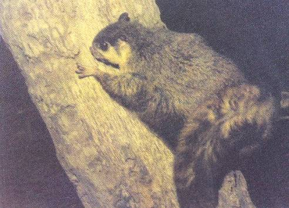
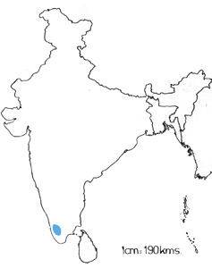

<head>
<meta http-equiv="Content-Type" content="text/html; charset=windows-1252">
<meta name="GENERATOR" content="Microsoft FrontPage 4.0">
<meta name="ProgId" content="FrontPage.Editor.Document">
<title>New Page 1</title>
<meta http-equiv="Content-Type" content="text/html; charset=windows-1252">
<meta name="GENERATOR" content="Microsoft FrontPage 4.0">
<meta name="ProgId" content="FrontPage.Editor.Document">
<title>ECONOMICALLY IMPORTANT PLANTS OF INDIA compiled by K</title>
<meta http-equiv="Content-Type" content="text/html; charset=windows-1252">
<meta name="GENERATOR" content="Microsoft FrontPage 4.0">
<meta name="ProgId" content="FrontPage.Editor.Document">
<title>ECONOMICALLY IMPORTANT PLANTS OF INDIA</title>
<meta http-equiv="Content-Type" content="text/html; charset=windows-1252">
<meta name="GENERATOR" content="Microsoft FrontPage 4.0">
<meta name="ProgId" content="FrontPage.Editor.Document">
<title>New Page 1</title>
<META HTTP-EQUIV="CONTENT-TYPE" CONTENT="text/html; charset=windows-1252">
<TITLE>Aegle marmelos </TITLE>
<META NAME="GENERATOR" CONTENT="Microsoft FrontPage 4.0">
<META NAME="CREATED" CONTENT="20010726;17265013">
<META NAME="CHANGEDBY" CONTENT="L.Sowmya">
<META NAME="CHANGED" CONTENT="20020726;13003551">
<META NAME="DESCRIPTION" CONTENT="Economically Important Plants">
<META NAME="KEYWORDS" CONTENT="Abies pindrow">
<META NAME="ProgId" CONTENT="FrontPage.Editor.Document">
<STYLE>
	<!--
		P { color: #2c9a97 }
	-->
	</STYLE>
<meta name="Microsoft Theme" content="none">
<link>
</head>

<body LANG="en-US" bgcolor="#CCCCCC" text="#009999">
<P><A NAME="begin"></A>
</P>
<table border="1" width="100%">
  <tr>
    <td width="100%" bgcolor="#1658BC">
      <P ALIGN=CENTER><b><font face="Verdana" size="6" color="#FFFFFF">Digitized
      Inventory of Animal Resources: Mammalia&nbsp;</font></b> <font color="#FFFFFF"><br>
      <b>
      Principal Investigator: Dr. R. J. B Alfred, Co-Investigator: Dr. Rama Krishna, Contributed by:
      Dr. M.S.Pradhan</b></font><br>
      </P>
    </td>
  </tr>
</table>
<p ALIGN="CENTER">&nbsp;</p>
<P ALIGN=LEFT><b><font size="6" face="Comic Sans MS" color="#009999">&nbsp;&nbsp;&nbsp;&nbsp;&nbsp;&nbsp;&nbsp;&nbsp;&nbsp;&nbsp;&nbsp;&nbsp;&nbsp;</font><font color="#808000"><font size="6" face="Comic Sans MS">&nbsp;</font><font size="6" face="Arial" color="#808000">&nbsp;&nbsp;<span style="mso-bidi-font-size: 12.0pt; mso-fareast-font-family: Times New Roman; mso-bidi-font-family: Times New Roman; mso-ansi-language: EN-US; mso-fareast-language: EN-US; mso-bidi-language: AR-SA"><a href="http://stp.unipune.ernet.in/zsi/photomap.html?code=131"><b style="mso-bidi-font-weight:normal"><i style="mso-bidi-font-style:normal"><span style="mso-ansi-font-size: 9.0pt">Petinomys
fuscocapillus</span></i><span style="mso-ansi-font-size: 9.0pt"> (Jerdon)</span></b></a></span>&nbsp;</font></font><font size="6" face="Comic Sans MS" color="#009999">&nbsp;&nbsp;&nbsp;</font></b></P>
<P ALIGN=LEFT><A HREF="#Taxonomic Details"><FONT FACE="Comic Sans MS">Taxonomic 
  Details</FONT> </A><FONT FACE="Comic Sans MS"><BR>
  ----- </FONT><A HREF="#Scientific Name"><FONT FACE="Comic Sans MS">Scientific Name</FONT></A><FONT FACE="Comic Sans MS"><BR>
  ----- </FONT><A HREF="#Classification"><FONT FACE="Comic Sans MS">Classification</FONT></A><FONT FACE="Comic Sans MS"><BR>
  ----- </FONT><A HREF="#Synonyms"><FONT FACE="Comic Sans MS">Synonyms</FONT></A><FONT FACE="Comic Sans MS"><BR>
  ----- </FONT><A HREF="#Common Names"><FONT FACE="Comic Sans MS">Common Names</FONT></A><FONT FACE="Comic Sans MS"><BR>
  </FONT><A HREF="#Other Biological Details"><FONT FACE="Comic Sans MS">Other 
  Biological Details</FONT></A><FONT FACE="Comic Sans MS"><BR>
  ----- </FONT><A HREF="#Habit and Habitat"><FONT FACE="Comic Sans MS">Habit and 
  Habitat</FONT></A><FONT FACE="Comic Sans MS"><BR>
  ----- </FONT><A HREF="#Distribution"><FONT FACE="Comic Sans MS">Distribution</FONT></A><FONT FACE="Comic Sans MS"><BR>
  ---------- </FONT><A HREF="#Extend of Occurance"><FONT FACE="Comic Sans MS">Extend of
Occurrence</FONT></A><FONT FACE="Comic Sans MS"><BR>
  ---------- </FONT><A HREF="#Area of occurance"><FONT FACE="Comic Sans MS">Area of
</FONT></A><A HREF="#Area of occurance"><font face="Comic Sans MS">occurrence</font></A><FONT FACE="Comic Sans MS"><BR>
  ---------- </FONT><A HREF="#Altitude:"><FONT FACE="Comic Sans MS">Altitude</FONT></A><FONT FACE="Comic Sans MS"><BR>
  ---------- </FONT><A HREF="#Population:"><FONT FACE="Comic Sans MS">Population</FONT></A><FONT FACE="Comic Sans MS"><BR>
  ----- </FONT>
  <A HREF="#Conservation Status:"><FONT FACE="Comic Sans MS">Conservation Status</FONT></A><FONT FACE="Comic Sans MS"><BR>
  ----- </FONT>
  <A HREF="#Diagnostic Features"><FONT FACE="Comic Sans MS">Diagnostic 
  Features</FONT></A><FONT FACE="Comic Sans MS"><BR>
  ----- </FONT>
<a HREF="#Breeding system"><FONT FACE="Comic Sans MS">Breeding system</FONT></a><FONT FACE="Comic Sans MS"><BR>
  </FONT><A HREF="#Miscellaneous Information"><FONT FACE="Comic Sans MS">Miscellaneous 
  Information</FONT></A><FONT FACE="Comic Sans MS"><BR>
  </FONT><A HREF="#Literature"><FONT FACE="Comic Sans MS">Literature</FONT></A></P>
<HR SIZE=3 COLOR="#0000ff">
<P><A NAME="Taxonomic Details"></A><FONT SIZE=6><FONT FACE="Monotype Corsiva"><FONT COLOR="#1658bc"><u>Taxonomic 
  Details</u></FONT></FONT></FONT> </P>
<HR SIZE=3 COLOR="#0000ff">
<P><A NAME="Scientific Name"></A><A NAME="Classification"></A><A NAME="Synonyms"></A><A NAME="Common Names"></A> 
  <FONT FACE="Comic Sans MS, sans-serif"><U>Scientific Name</U> :&nbsp;</FONT><font face="Comic Sans MS, sans-serif">&nbsp;</font><b><font face="Arial" size="5" color="#808000">&nbsp;&nbsp;</font><span style="mso-bidi-font-size: 12.0pt; mso-fareast-font-family: Times New Roman; mso-bidi-font-family: Times New Roman; mso-ansi-language: EN-US; mso-fareast-language: EN-US; mso-bidi-language: AR-SA"><a href="http://stp.unipune.ernet.in/zsi/photomap.html?code=131"><b style="mso-bidi-font-weight:normal"><i style="mso-bidi-font-style:normal"><span style="mso-ansi-font-size: 9.0pt"><font face="Arial" size="5" color="#808000">Petinomys
fuscocapillus</font></span></i><font face="Arial" size="5" color="#808000"><span style="mso-ansi-font-size: 9.0pt"> (Jerdon)</span></font></b></a></span><font face="Arial" size="5" color="#808000">&nbsp;</font></b></P>
<P><font face="Comic Sans MS" size="3"><U>Classification</U><b><U>:</U></b></font></P>
<blockquote>
  <blockquote>
    <blockquote>
      <blockquote>
        <blockquote>
          <blockquote>
<P><font face="Arial" size="4"><span style="mso-bidi-font-size: 12.0pt; color: black">Order:<i style="mso-bidi-font-style:normal">Rodentia</i><o:p>
</o:p>
</span></font></P>
<P><font face="Arial" size="4"><span style="mso-bidi-font-size: 12.0pt; color: black">Suborder:<i style="mso-bidi-font-style:normal">Sciurognathi</i><o:p>
</o:p>
</span></font></P>
<P><font face="Arial" size="4"><span style="mso-bidi-font-size: 12.0pt; color: black">Family:<i style="mso-bidi-font-style:normal">Sciuridae</i><o:p>
</o:p>
</span></font></P>
            <span style="mso-bidi-font-size: 12.0pt; mso-fareast-font-family: Times New Roman; mso-bidi-font-family: Times New Roman; color: black; mso-ansi-language: EN-US; mso-fareast-language: EN-US; mso-bidi-language: AR-SA"><font face="Arial" size="4">Subfamily:</font><i style="mso-bidi-font-style:normal"><font face="Arial" size="4">Petauristinae</font></i></span>
          </blockquote>
        </blockquote>
      </blockquote>
    </blockquote>
  </blockquote>
  <P><font face="Comic Sans MS, sans-serif" size="3">
  <U>Synonyms</U>:&nbsp;&nbsp;&nbsp;&nbsp;&nbsp;&nbsp;&nbsp;&nbsp;&nbsp;&nbsp;&nbsp;&nbsp;&nbsp;&nbsp;&nbsp;&nbsp;&nbsp;&nbsp;</font><i style="mso-bidi-font-style:
normal"><font face="Arial" size="3"><span style="mso-bidi-font-size: 12.0pt; color: black">Sciuropterus fuscocapillus, Jerdon and Scuropterus
  layardi, Kelaart</span></font></i><font face="Arial" size="3"><span style="font-size:9.0pt;mso-bidi-font-size:
12.0pt;font-family:Verdana;color:black"> </span><span style="font-size:9.0pt;
mso-bidi-font-size:12.0pt;font-family:Verdana;mso-fareast-font-family:&quot;Arial Unicode MS&quot;;
color:black"><o:p>
  </o:p>
  </span>&nbsp;</font><font face="Comic Sans MS, sans-serif" size="3">&nbsp;&nbsp;&nbsp;&nbsp;&nbsp;&nbsp;&nbsp;
  <span style="font-size:9.0pt;mso-bidi-font-size:12.0pt;font-family:Verdana;
mso-fareast-font-family:&quot;Arial Unicode MS&quot;;color:black"></o:p>
</span></font></P>
</blockquote>
<P><font face="Comic Sans MS, sans-serif" size="3">
  <U>Common Names</U><SPAN STYLE="text-decoration: none">:&nbsp;</SPAN></font><FONT FACE="Comic Sans MS, sans-serif"><SPAN STYLE="text-decoration: none">&nbsp;&nbsp;&nbsp;&nbsp;&nbsp;&nbsp;&nbsp;&nbsp;&nbsp;&nbsp;&nbsp;&nbsp;&nbsp;</SPAN></FONT><span style="text-decoration: none"><font face="Comic Sans MS, sans-serif">&nbsp;&nbsp;&nbsp;
</font></span><span style="mso-bidi-font-size: 12.0pt; color: black"><font face="Arial" size="3">Small Travancore
Flying Squirrel&nbsp;<o:p>
 </font></span><span style="font-size:9.0pt;mso-bidi-font-size:12.0pt;
color:black">
</o:p>
</span></P>
<blockquote>
  <blockquote>
    <blockquote>
      <blockquote>
        <blockquote>
<p class="MsoNormal" style="text-align:justify"><font face="Arial" size="3"><span style="mso-bidi-font-size: 12.0pt; color: black"><i style="mso-bidi-font-style:
normal">Regional Names:</i>&nbsp;Malyalam: Paran, Parayannan; Tamil: Parravanil<span style="mso-bidi-font-size: 12.0pt; mso-fareast-font-family: Arial Unicode MS; color: black"><o:p>
</span></span></font><span style="font-size:9.0pt;
mso-bidi-font-size:12.0pt;font-family:Verdana;mso-fareast-font-family:&quot;Arial Unicode MS&quot;;
color:black">
</o:p>
</span></p>
        </blockquote>
      </blockquote>
    </blockquote>
  </blockquote>
</blockquote>
<P><FONT FACE="Comic Sans MS, sans-serif"><SPAN STYLE="text-decoration: none">&nbsp;&nbsp;&nbsp;&nbsp;&nbsp;&nbsp;
<b><font size="4" color="#000000">
  <BR>
</font></b>
</SPAN></FONT><font face="Comic Sans MS"><BR>
  </font><BR>
</P>
<P ALIGN=RIGHT><A HREF="#begin"><U><FONT FACE="Comic Sans MS">Back to
Top</FONT></U></A></P>
<HR SIZE=3 COLOR="#0000ff">
<P><A NAME="Other Biological Details"></A><FONT SIZE=3><FONT SIZE=6><FONT FACE="Monotype Corsiva"><FONT COLOR="#1658bc"><u>Other 
  Biological Details</u></FONT></FONT></FONT></FONT> 
</P>
<p class="MsoNormal" style="text-align:justify"><font size="3" face="Arial"><b><font color="#FF0000"><i style="mso-bidi-font-style:
normal"><span style="mso-bidi-font-size: 12.0pt">Threats:&nbsp;</span></i><span style="mso-bidi-font-size: 12.0pt">
</span></font></b><span style="mso-bidi-font-size: 12.0pt; color: black"> Habitat
Fragmentation, Human Interference, Loss of Habitat, Limiting Factors in its
distribution etc.;&nbsp;<i style="mso-bidi-font-style:normal">Effect of threats
on population (Perceived or inferred)</i>:&nbsp;Declining&nbsp;<o:p>
</o:p>
</span></font></p>
<p class="MsoNormal" style="text-align:justify"><font size="3" face="Arial"><i style="mso-bidi-font-style:
normal"><b><span style="mso-bidi-font-size: 12.0pt"><font color="#FF0000">Trade:</font></span></b><span style="mso-bidi-font-size: 12.0pt; color: black">&nbsp;</span></i><span style="mso-bidi-font-size: 12.0pt; color: black"> Not Known;&nbsp;<i style="mso-bidi-font-style:normal">Parts
in trade</i>:&nbsp;Not Known;&nbsp;<i style="mso-bidi-font-style:normal">Effect
of trade on population (Perceived or inferred)</i>:&nbsp;Not declining<span style="mso-bidi-font-size: 12.0pt; mso-fareast-font-family: Arial Unicode MS; color: black"><o:p>
</span></span></font><span style="font-size:9.0pt;
mso-bidi-font-size:12.0pt;font-family:Verdana;mso-fareast-font-family:&quot;Arial Unicode MS&quot;;
color:black">
</o:p>
</span></p>
<P>&nbsp; 
</P>
<HR SIZE=3 COLOR="#0000ff">
<P STYLE="margin-bottom: 0cm"><A NAME="Habit and Habitat"></A><U><FONT FACE="Comic Sans MS">HABIT 
  &amp; HABITAT</FONT></U></P>
<p class="MsoNormal" style="text-align:justify"><font face="Arial" size="3"><span style="mso-bidi-font-size: 12.0pt; color: black">It is nocturnal in
habit. Keeping itself in a tree hole in forest during day time. The animal feeds
on fruits, shoots, leaves and bark of tree. Females gives birth to two young
ones.&nbsp;<o:p>
</o:p>
</span></font></p>
<font face="Arial" size="3">
<i style="mso-bidi-font-style:normal"><span style="mso-bidi-font-size: 12.0pt; mso-fareast-font-family: Times New Roman; mso-bidi-font-family: Times New Roman; mso-ansi-language: EN-US; mso-fareast-language: EN-US; mso-bidi-language: AR-SA"><font color="#008000"><b>Habitat Structure:</b></font></span></i><span style="font-size:9.0pt;mso-bidi-font-size:12.0pt;font-family:Verdana;
mso-fareast-font-family:&quot;Times New Roman&quot;;mso-bidi-font-family:&quot;Times New Roman&quot;;
color:black;mso-ansi-language:EN-US;mso-fareast-language:EN-US;mso-bidi-language:
AR-SA">&nbsp;Tropical and moist deciduous forest, evergreen-semi-evergreen
forests and plantations like coconut, arecanut and coca plantations. 20% habitat
structure has decreased in the past.</span>
</font>
<p align=RIGHT style="margin-bottom: 0cm"><font face="Comic Sans MS" size="3"><a href="#begin">Back 
  to Top</a></font></p>
<P STYLE="margin-bottom: 0cm">&nbsp;</P>
<P><font size="3"><A NAME="Distribution"></A><A NAME="Extend of Occurance"></A><A NAME="Area of occurance:"></A><A NAME="Altitude:"></A><A NAME="Population:"></a><A NAME="Conservation status:"></A> 
  <FONT FACE="Comic Sans MS"><U>Distribution</U>:</FONT></font></P>
<blockquote>
  <blockquote>
    <blockquote>
      <blockquote>
<P><font size="3" face="Arial"><span style="mso-bidi-font-size: 12.0pt; color: black">Thiruananthapuram,
Pathanamthitta, Peechi (Thrissur?) Dist. in Kerala, India.<span style="mso-bidi-font-size: 12.0pt; mso-fareast-font-family: Arial Unicode MS; color: black"><o:p>
</o:p>
</span></span></font></P>
<P><font size="3" face="Arial"><span style="mso-bidi-font-size: 12.0pt; mso-fareast-font-family: Times New Roman; mso-bidi-font-family: Times New Roman; color: black; mso-ansi-language: EN-US; mso-fareast-language: EN-US; mso-bidi-language: AR-SA"><i style="mso-bidi-font-style:normal">No.</i><i style="mso-bidi-font-style: normal; mso-bidi-font-size: 12.0pt; mso-fareast-font-family: Times New Roman; mso-bidi-font-family: Times New Roman; color: black; mso-ansi-language: EN-US; mso-fareast-language: EN-US; mso-bidi-language: AR-SA">
</i><i style="mso-bidi-font-style:normal">of Locations:&nbsp;</i></span><span style="mso-bidi-font-size: 12.0pt; mso-fareast-font-family: Times New Roman; mso-bidi-font-family: Times New Roman; color: black; mso-ansi-language: EN-US; mso-fareast-language: EN-US; mso-bidi-language: AR-SA">Seven;&nbsp;<i style="mso-bidi-font-style:normal">Type:&nbsp;</i>Fragmented</span></font></P>
      </blockquote>
    </blockquote>
  </blockquote>
</blockquote>
<P><font face="Comic Sans MS" size="3"><U>Extent of </U><u>Occurrence&nbsp;&nbsp;&nbsp;</u>&nbsp;&nbsp;&nbsp;&nbsp;&nbsp;&nbsp;&nbsp;&nbsp;&nbsp;&nbsp;&nbsp;&nbsp;&nbsp;&nbsp;</font><font face="Arial" size="3"><span style="mso-bidi-font-size: 12.0pt; mso-fareast-font-family: Arial Unicode MS; color: black"><span style="mso-bidi-font-size: 12.0pt; color: black; mso-fareast-font-family: Arial Unicode MS">10001-20000
sq.kms.</span><o:p>
</o:p>
</span>
  </font><font face="Comic Sans MS" size="3"><span style="font-size:9.0pt;mso-bidi-font-size:12.0pt;font-family:Verdana;
mso-fareast-font-family:&quot;Arial Unicode MS&quot;;color:black">
</o:p>
</span>
  </font></P>
<P STYLE="margin-bottom: 0cm"><font face="Comic Sans MS" size="3"><U>Area of occurrence:</U></font><font face="Arial" size="3">&nbsp;&nbsp;&nbsp;&nbsp;&nbsp;&nbsp;&nbsp;&nbsp;&nbsp;&nbsp;&nbsp;&nbsp;&nbsp;&nbsp;&nbsp;&nbsp;&nbsp;&nbsp;&nbsp;&nbsp;&nbsp;&nbsp;&nbsp;
<span style="mso-bidi-font-size: 12.0pt; mso-fareast-font-family: Arial Unicode MS; color: black; mso-bidi-font-family: Times New Roman; mso-ansi-language: EN-US; mso-fareast-language: EN-US; mso-bidi-language: AR-SA">greater than 2001 sq.kms</span></font><font face="Comic Sans MS" size="3"><span style="font-size:9.0pt;mso-bidi-font-size:12.0pt;font-family:Verdana;
mso-fareast-font-family:&quot;Arial Unicode MS&quot;;color:black"><U></o:p>
</U> 
</span> 
  </font></P>
<P STYLE="margin-bottom: 0cm"><font face="Comic Sans MS" size="3"><U>Altitude:</U></font><font color="#000000" face="Comic Sans MS" size="4">&nbsp;&nbsp;&nbsp;&nbsp;&nbsp;&nbsp;&nbsp;&nbsp;&nbsp;&nbsp;&nbsp;&nbsp;&nbsp;&nbsp;&nbsp;&nbsp;&nbsp;&nbsp;&nbsp;&nbsp;&nbsp;&nbsp;&nbsp;&nbsp;&nbsp;&nbsp;&nbsp;&nbsp;&nbsp;&nbsp;</font><font face="Arial" size="3"><span style="font-size:9.0pt;mso-bidi-font-size:12.0pt;
font-family:Verdana;mso-fareast-font-family:&quot;Times New Roman&quot;;mso-bidi-font-family:
&quot;Times New Roman&quot;;color:black;mso-ansi-language:EN-US;mso-fareast-language:
EN-US;mso-bidi-language:AR-SA">up to 700 m</span></font><font face="Comic Sans MS" size="3"><BR>
  <BR>
  <U>Population:</U>&nbsp; </font></P>
<p class="MsoNormal" style="text-align:justify"><font face="Arial" size="3"><i style="mso-bidi-font-style:
normal"><b><span style="mso-bidi-font-size: 12.0pt"><font color="#008000">Global Population:</font></span></b><span style="mso-bidi-font-size: 12.0pt; color: black">&nbsp;</span></i><span style="mso-bidi-font-size: 12.0pt; color: black">Not Known;&nbsp;<i style="mso-bidi-font-style:normal">No.</i><i style="mso-bidi-font-style: normal; font-size: 9.0pt; mso-bidi-font-size: 12.0pt; font-family: Verdana; color: black">
</i><i style="mso-bidi-font-style:normal">of mature individuals in all the
populations:&nbsp;</i>Not known&nbsp;<o:p>
</o:p>
</span></font></p>
<p class="MsoNormal" style="text-align:justify"><font face="Arial" size="3"><i style="mso-bidi-font-style:
normal"><b><span style="mso-bidi-font-size: 12.0pt"><font color="#008000">Captive Population:&nbsp;</font></span></b></i><span style="mso-bidi-font-size: 12.0pt; color: black">Not Known&nbsp;<o:p>
</o:p>
</span></font></p>
<p class="MsoNormal" style="text-align:justify"><font face="Arial" size="3"><i style="mso-bidi-font-style:
normal"><b><span style="mso-bidi-font-size: 12.0pt"><font color="#008000">Life span:&nbsp;</font></span></b></i><span style="mso-bidi-font-size: 12.0pt; color: black"> (Wild):&nbsp;Not
Known;&nbsp;(Captivity):&nbsp;Not Known&nbsp;<o:p>
</o:p>
</span></font></p>
<font face="Arial" size="3">
<i style="mso-bidi-font-style:normal"><b><span style="mso-bidi-font-size: 12.0pt; mso-fareast-font-family: Times New Roman; mso-bidi-font-family: Times New Roman; mso-ansi-language: EN-US; mso-fareast-language: EN-US; mso-bidi-language: AR-SA"><font color="#008000">Population Trend:&nbsp;</font></span></b></i><span style="font-size:9.0pt;mso-bidi-font-size:12.0pt;font-family:Verdana;
mso-fareast-font-family:&quot;Times New Roman&quot;;mso-bidi-font-family:&quot;Times New Roman&quot;;
color:black;mso-ansi-language:EN-US;mso-fareast-language:EN-US;mso-bidi-language:
AR-SA">General decline.</span>
</font>
<P STYLE="margin-bottom: 0cm"><font face="Comic Sans MS" size="3"><U>Conservation status:</U></font><font face="Comic Sans MS" size="4" color="#FF0000">&nbsp;&nbsp;&nbsp;&nbsp;&nbsp;&nbsp;&nbsp;&nbsp;&nbsp;&nbsp;&nbsp;&nbsp;&nbsp;&nbsp;&nbsp;&nbsp;&nbsp;&nbsp;&nbsp;&nbsp;&nbsp;&nbsp;
<span style="font-size:9.0pt;
mso-bidi-font-size:12.0pt;font-family:Verdana;color:black">Non-Endemic species</span><span style="font-size:9.0pt;mso-bidi-font-size:12.0pt;font-family:Verdana;
mso-fareast-font-family:&quot;Arial Unicode MS&quot;;color:black"><o:p>
</o:p>
</span>&nbsp;&nbsp;&nbsp;&nbsp;&nbsp;&nbsp;&nbsp;&nbsp; <b style="mso-bidi-font-weight:normal"><span style="font-size:9.0pt;mso-bidi-font-size:12.0pt;font-family:Verdana;
mso-fareast-font-family:&quot;Times New Roman&quot;;mso-bidi-font-family:&quot;Times New Roman&quot;;
color:black;mso-ansi-language:EN-US;mso-fareast-language:EN-US;mso-bidi-language:
AR-SA">Vulnerable</span></b></font><font face="Comic Sans MS" size="3"><BR>

</font>

<span style="mso-tab-count:1"><font face="Arial" size="3">&nbsp;<i style="mso-bidi-font-style:normal"><span style="font-size:9.0pt;mso-bidi-font-size:12.0pt;font-family:Verdana;
mso-fareast-font-family:&quot;Times New Roman&quot;;mso-bidi-font-family:&quot;Times New Roman&quot;;
color:black;mso-ansi-language:EN-US;mso-fareast-language:EN-US;mso-bidi-language:
AR-SA">CITES APPENDIX:</span></i><span style="font-size:9.0pt;mso-bidi-font-size:
12.0pt;font-family:Verdana;mso-fareast-font-family:&quot;Times New Roman&quot;;
mso-bidi-font-family:&quot;Times New Roman&quot;;color:black;mso-ansi-language:EN-US;
mso-fareast-language:EN-US;mso-bidi-language:AR-SA">&nbsp;Not Listed;&nbsp;<i style="mso-bidi-font-style:normal">Indian
Wildlife (Protection) Act (1972) (As </i><i style="mso-bidi-font-style: normal; mso-bidi-font-size: 12.0pt; mso-fareast-font-family: Times New Roman; mso-bidi-font-family: Times New Roman; color: black; mso-ansi-language: EN-US; mso-fareast-language: EN-US; mso-bidi-language: AR-SA; mso-tab-count: 1">amended</i><i style="mso-bidi-font-style:normal">
up</i><i style="mso-bidi-font-style: normal; mso-bidi-font-size: 12.0pt; mso-fareast-font-family: Times New Roman; mso-bidi-font-family: Times New Roman; color: black; mso-ansi-language: EN-US; mso-fareast-language: EN-US; mso-bidi-language: AR-SA; mso-tab-count: 1">
</i><i style="mso-bidi-font-style:normal">to 2002):</i>&nbsp;Schedule I;&nbsp;Part
I;&nbsp;<i style="mso-bidi-font-style:normal">Indian Red Data Book (IUCN, 1994):</i>&nbsp;Endangered;&nbsp;<i style="mso-bidi-font-style:normal">IUCN
(1998)</i> (Proposed):&nbsp;Vulnerable;&nbsp;<i style="mso-bidi-font-style:normal">IUCN
(2002)</i> (Proposed):&nbsp;Vulnerable based on Version 2.3 1994 (IUCN, 2003).;&nbsp;</span>&nbsp;&nbsp;&nbsp;&nbsp;&nbsp;&nbsp;&nbsp;&nbsp;

</font>
 </span>
<font face="Comic Sans MS" size="3">
  <P STYLE="margin-bottom: 0cm"><font face="Comic Sans MS" size="3"><A NAME="Diagnostic Features"></A><A NAME="Breeding system"></A><U>DIAGNOSTIC 
  FEATURES</U>:</font></P>

</font>

<p class="MsoNormal" style="text-align:justify"><font face="Arial" size="3"><span style="mso-bidi-font-size: 12.0pt; color: black">Small Travancore
Flying squirrel is a medium sized squirrel with thick fur, long brushy tail and
pencil of soft hairs at the base of outer ear conch greatly exceeding the ear in
length. Septae in auditory bullae 5-7 in number and are arranged in honeycomb
pattern. The auditory bullae are more inflated than the other <i> Petinomys</i>
species. Body reddish brown above, while sides darker than back. Cheeks and
sides on the belly white. Tail possesses central line of black hairs. Molar
teeth not excessively wrinkled. &nbsp;<o:p>
</o:p>
</span>

</font>
</p>
<p class="MsoNormal" style="text-align:justify"><font face="Arial" size="3"><b><i style="mso-bidi-font-style:
normal"><span style="mso-bidi-font-size: 12.0pt"><font color="#008000">Measurements:</font></span></i><span style="mso-bidi-font-size: 12.0pt"><font color="#008000">&nbsp;</font></span></b><span style="mso-bidi-font-size: 12.0pt; color: black">(In mm): Head
and Body Length: 296-322; Tail Length: 244-310; Hind foot: 55.&nbsp;<o:p>
</o:p>
</span></font></p>
<p class="MsoNormal" style="text-align:justify"><font face="Arial" size="3"><i style="mso-bidi-font-style:
normal"><span style="mso-bidi-font-size: 12.0pt"><font color="#008000"><b>Weight:</b></font></span></i><span style="mso-bidi-font-size: 12.0pt; color: black">&nbsp;Not
Known</span></font></p>

<font face="Comic Sans MS" size="3">

  <P STYLE="margin-bottom: 0cm">&nbsp;</P>

</font>
<p>&nbsp;</p>
<P ALIGN=RIGHT><A HREF="#begin"><FONT FACE="Comic Sans MS">Back to
Top</FONT></A><FONT FACE="Comic Sans MS"> </FONT>
</P>
<HR SIZE=3 COLOR="#0000ff">
<P><A NAME="Miscellaneous Information2"></A><A NAME="Miscellaneous Information1"></A>
 <FONT SIZE=6><FONT FACE="Monotype Corsiva"><FONT COLOR="#1658bc">
<U>Miscellaneous
Information</U>&nbsp;&nbsp;</FONT></FONT></FONT>
</P>
<P><font face="Arial" size="3"><b><i style="mso-bidi-font-style:
normal"><span style="mso-bidi-font-size: 12.0pt"><font color="#008000">Intraspecific variations:</font></span></i><span style="mso-bidi-font-size: 12.0pt"><font color="#008000">&nbsp;</font></span></b><span style="mso-bidi-font-size: 12.0pt; color: black">Out of two subspecies the nominate subspecies occurs in
India, while the other has been recorded from Sri Lanka.</span></font>
</P>
<P><font face="Arial" size="3"><i style="mso-bidi-font-style:
normal"><b><span style="mso-bidi-font-size: 12.0pt"><font color="#008000">Sighting Records:&nbsp;</font></span></b></i><span style="mso-bidi-font-size: 12.0pt; color: black"> <i style="mso-bidi-font-style:normal">Type
of Sighting:</i>&nbsp;Direct and Indirect;&nbsp;<i style="mso-bidi-font-style:normal">Field
Notes:</i>&nbsp;Sighting records reported by Kurup in Western Ghats in 1989,
Ashraf et. al in Western Ghats in 1993, Ramachandran in Schdwiney Wild Life
Sanctuary in 1995, Xavier et.al in Vazhathacand in 1996, and Zucharias and
Christoffer in Periyar Tiger Reserve in 1996 (CAMP Reports, 1998).&nbsp;<span style="font-size:9.0pt;
mso-bidi-font-size:12.0pt;font-family:Verdana;mso-fareast-font-family:&quot;Arial Unicode MS&quot;;
color:black"><o:p>
</o:p>
 <o:p>
</o:p>
</span></span></font>
</P>
<p class="MsoNormal" style="text-align:justify"><font face="Arial" size="3"><i style="mso-bidi-font-style:
normal"><b><font color="#008000"><span style="mso-bidi-font-size: 12.0pt">Taxon
re</span></font></b><span style="mso-bidi-font-size: 12.0pt"><font color="#008000"><b>lated studies
recommended</b></font></span><span style="mso-bidi-font-size: 12.0pt; color: black">:&nbsp;</span></i><span style="mso-bidi-font-size: 12.0pt; color: black">In situ survey, Monitoring, Life History studies, Habitat
Management etc.&nbsp;<o:p>
</o:p>
</span></font></p>
<p class="MsoNormal" style="text-align:justify"><font face="Arial" size="3"><i style="mso-bidi-font-style:
normal"><b><span style="mso-bidi-font-size: 12.0pt"><font color="#008000">Remarks:</font></span></b><span style="mso-bidi-font-size: 12.0pt; color: black">&nbsp;</span></i><span style="mso-bidi-font-size: 12.0pt; color: black">IUCN endangered
category is strongly recommended for <i> Petinomys fuscocapilus fuscocapilus </i> Indian
subspecies on the basis of restricted distribution, extreme fragmentation,
limited number of localities and threats due to loss of habitat and corridor
loss etc.<span style="font-size:9.0pt;mso-bidi-font-size:12.0pt;
font-family:Verdana;mso-fareast-font-family:&quot;Arial Unicode MS&quot;;color:black"><o:p>
</o:p>
</span></span></font></p>
<font face="Comic Sans MS" size="3">
<p class="MsoNormal" style="margin-left:1.0in;text-align:justify;text-indent:
-1.0in"><span style="mso-spacerun: yes">&nbsp;&nbsp;</span><span style="mso-tab-count:1">&nbsp;&nbsp;&nbsp;&nbsp;&nbsp;&nbsp;&nbsp;</span>&nbsp;&nbsp;&nbsp;<span style="mso-tab-count: 1">&nbsp;
</span></p>
</font>
<HR SIZE=3 COLOR="#0000ff">
<P><font face="Comic Sans MS">&nbsp;&nbsp;&nbsp;&nbsp;&nbsp;&nbsp;&nbsp;&nbsp;&nbsp;&nbsp;&nbsp;&nbsp;&nbsp;&nbsp;&nbsp;&nbsp;&nbsp;&nbsp;&nbsp;&nbsp;&nbsp;&nbsp;&nbsp;&nbsp;&nbsp;&nbsp;&nbsp;&nbsp;&nbsp;&nbsp;&nbsp;&nbsp;&nbsp;&nbsp;&nbsp;&nbsp;&nbsp;&nbsp;&nbsp;&nbsp;&nbsp;&nbsp;&nbsp;
<span style="font-size:9.0pt;mso-bidi-font-size:12.0pt;
font-family:Verdana;mso-fareast-font-family:&quot;Times New Roman&quot;;mso-bidi-font-family:
&quot;Times New Roman&quot;;color:black;mso-ansi-language:EN-US;mso-fareast-language:
EN-US;mso-bidi-language:AR-SA"><!--[if gte vml 1]><v:shapetype id="_x0000_t75"
 coordsize="21600,21600" o:spt="75" o:preferrelative="t" path="m@4@5l@4@11@9@11@9@5xe"
 filled="f" stroked="f">
 <v:stroke joinstyle="miter"/>
 <v:formulas>
  <v:f eqn="if lineDrawn pixelLineWidth 0"/>
  <v:f eqn="sum @0 1 0"/>
  <v:f eqn="sum 0 0 @1"/>
  <v:f eqn="prod @2 1 2"/>
  <v:f eqn="prod @3 21600 pixelWidth"/>
  <v:f eqn="prod @3 21600 pixelHeight"/>
  <v:f eqn="sum @0 0 1"/>
  <v:f eqn="prod @6 1 2"/>
  <v:f eqn="prod @7 21600 pixelWidth"/>
  <v:f eqn="sum @8 21600 0"/>
  <v:f eqn="prod @7 21600 pixelHeight"/>
  <v:f eqn="sum @10 21600 0"/>
 </v:formulas>
 <v:path o:extrusionok="f" gradientshapeok="t" o:connecttype="rect"/>
 <o:lock v:ext="edit" aspectratio="t"/>
</v:shapetype><v:shape id="_x0000_i1025" type="#_x0000_t75" alt="" style='width:369pt;
 height:265.5pt' fillcolor="window">
 <v:imagedata src="file:///C:/DOCUME~1/jyothi/LOCALS~1/Temp/msoclip1/01/clip_image001.jpg"
  o:href="http://stp.unipune.ernet.in/zsi/images/photos/img131.jpg"/>
</v:shape><![endif]-->
</span>
  </font></P>
<P>&nbsp;&nbsp;&nbsp;<font face="Comic Sans MS"><span style="font-size: 9.0pt; mso-bidi-font-size: 12.0pt; font-family: Verdana; mso-fareast-font-family: Times New Roman; mso-bidi-font-family: Times New Roman; color: black; mso-ansi-language: EN-US; mso-fareast-language: EN-US; mso-bidi-language: AR-SA">&nbsp;&nbsp;&nbsp;&nbsp;&nbsp;&nbsp;&nbsp;&nbsp;&nbsp;&nbsp;&nbsp;&nbsp;&nbsp;&nbsp;&nbsp;&nbsp;&nbsp;&nbsp;&nbsp;&nbsp;&nbsp;&nbsp;&nbsp;&nbsp;&nbsp;&nbsp;&nbsp;&nbsp;&nbsp;&nbsp;&nbsp;&nbsp;&nbsp;&nbsp;&nbsp;&nbsp;&nbsp;&nbsp;&nbsp;&nbsp;&nbsp;&nbsp;&nbsp;&nbsp;&nbsp;&nbsp;&nbsp;&nbsp;&nbsp;&nbsp;&nbsp;&nbsp;
<span style="font-size:9.0pt;mso-bidi-font-size:12.0pt;
font-family:Verdana;mso-fareast-font-family:&quot;Times New Roman&quot;;mso-bidi-font-family:
&quot;Times New Roman&quot;;color:black;mso-ansi-language:EN-US;mso-fareast-language:
EN-US;mso-bidi-language:AR-SA"><!--[if gte vml 1]><v:shapetype id="_x0000_t75"
 coordsize="21600,21600" o:spt="75" o:preferrelative="t" path="m@4@5l@4@11@9@11@9@5xe"
 filled="f" stroked="f">
 <v:stroke joinstyle="miter"/>
 <v:formulas>
  <v:f eqn="if lineDrawn pixelLineWidth 0"/>
  <v:f eqn="sum @0 1 0"/>
  <v:f eqn="sum 0 0 @1"/>
  <v:f eqn="prod @2 1 2"/>
  <v:f eqn="prod @3 21600 pixelWidth"/>
  <v:f eqn="prod @3 21600 pixelHeight"/>
  <v:f eqn="sum @0 0 1"/>
  <v:f eqn="prod @6 1 2"/>
  <v:f eqn="prod @7 21600 pixelWidth"/>
  <v:f eqn="sum @8 21600 0"/>
  <v:f eqn="prod @7 21600 pixelHeight"/>
  <v:f eqn="sum @10 21600 0"/>
 </v:formulas>
 <v:path o:extrusionok="f" gradientshapeok="t" o:connecttype="rect"/>
 <o:lock v:ext="edit" aspectratio="t"/>
</v:shapetype><v:shape id="_x0000_i1025" type="#_x0000_t75" alt="Map" style='width:177.75pt;
 height:225pt' fillcolor="window">
 <v:imagedata src="Mammal87.jpg"
  o:href="http://stp.unipune.ernet.in/zsi/images/maps/map131.jpg"/>
</v:shape><![endif]-->
</span></span>&nbsp;&nbsp;&nbsp;&nbsp;&nbsp;&nbsp;&nbsp;&nbsp;&nbsp;&nbsp;&nbsp;&nbsp;&nbsp;&nbsp;&nbsp;&nbsp;&nbsp;&nbsp;&nbsp;&nbsp;&nbsp;&nbsp;&nbsp;&nbsp;&nbsp;&nbsp;&nbsp;&nbsp;&nbsp;&nbsp;&nbsp;&nbsp;
<span style="font-size:9.0pt;mso-bidi-font-size:12.0pt;
font-family:Verdana;mso-fareast-font-family:&quot;Times New Roman&quot;;mso-bidi-font-family:
&quot;Times New Roman&quot;;color:black;mso-ansi-language:EN-US;mso-fareast-language:
EN-US;mso-bidi-language:AR-SA"><!--[if gte vml 1]><v:shapetype id="_x0000_t75"
 coordsize="21600,21600" o:spt="75" o:preferrelative="t" path="m@4@5l@4@11@9@11@9@5xe"
 filled="f" stroked="f">
 <v:stroke joinstyle="miter"/>
 <v:formulas>
  <v:f eqn="if lineDrawn pixelLineWidth 0"/>
  <v:f eqn="sum @0 1 0"/>
  <v:f eqn="sum 0 0 @1"/>
  <v:f eqn="prod @2 1 2"/>
  <v:f eqn="prod @3 21600 pixelWidth"/>
  <v:f eqn="prod @3 21600 pixelHeight"/>
  <v:f eqn="sum @0 0 1"/>
  <v:f eqn="prod @6 1 2"/>
  <v:f eqn="prod @7 21600 pixelWidth"/>
  <v:f eqn="sum @8 21600 0"/>
  <v:f eqn="prod @7 21600 pixelHeight"/>
  <v:f eqn="sum @10 21600 0"/>
 </v:formulas>
 <v:path o:extrusionok="f" gradientshapeok="t" o:connecttype="rect"/>
 <o:lock v:ext="edit" aspectratio="t"/>
</v:shapetype><v:shape id="_x0000_i1025" type="#_x0000_t75" alt="" style='width:309.75pt;
 height:262.5pt' fillcolor="window">
 <v:imagedata src="file:///C:/DOCUME~1/jyothi/LOCALS~1/Temp/FrontPageTempDir/wpe1.jpg"
  o:href="http://stp.unipune.ernet.in/zsi/images/photos/img113.jpg"/>
</v:shape><![endif]-->
&nbsp;</span><br>
</font></P>
<P><font size="3">&nbsp;&nbsp;&nbsp;&nbsp;&nbsp;&nbsp;&nbsp;&nbsp;&nbsp;&nbsp;&nbsp;&nbsp;&nbsp;&nbsp;&nbsp;&nbsp;&nbsp;&nbsp;&nbsp;&nbsp;&nbsp;&nbsp;&nbsp;&nbsp;&nbsp;&nbsp;&nbsp;&nbsp;&nbsp;&nbsp;&nbsp;&nbsp;&nbsp;&nbsp;&nbsp;&nbsp;&nbsp;&nbsp;&nbsp;
<span style="font-size:9.0pt;mso-bidi-font-size:12.0pt;
font-family:Verdana;mso-fareast-font-family:&quot;Times New Roman&quot;;mso-bidi-font-family:
&quot;Times New Roman&quot;;color:black;mso-ansi-language:EN-US;mso-fareast-language:
EN-US;mso-bidi-language:AR-SA"><!--[if gte vml 1]><v:shapetype id="_x0000_t75"
 coordsize="21600,21600" o:spt="75" o:preferrelative="t" path="m@4@5l@4@11@9@11@9@5xe"
 filled="f" stroked="f">
 <v:stroke joinstyle="miter"/>
 <v:formulas>
  <v:f eqn="if lineDrawn pixelLineWidth 0"/>
  <v:f eqn="sum @0 1 0"/>
  <v:f eqn="sum 0 0 @1"/>
  <v:f eqn="prod @2 1 2"/>
  <v:f eqn="prod @3 21600 pixelWidth"/>
  <v:f eqn="prod @3 21600 pixelHeight"/>
  <v:f eqn="sum @0 0 1"/>
  <v:f eqn="prod @6 1 2"/>
  <v:f eqn="prod @7 21600 pixelWidth"/>
  <v:f eqn="sum @8 21600 0"/>
  <v:f eqn="prod @7 21600 pixelHeight"/>
  <v:f eqn="sum @10 21600 0"/>
 </v:formulas>
 <v:path o:extrusionok="f" gradientshapeok="t" o:connecttype="rect"/>
 <o:lock v:ext="edit" aspectratio="t"/>
</v:shapetype><v:shape id="_x0000_i1025" type="#_x0000_t75" alt="Map" style='width:201pt;
 height:225pt' fillcolor="window">
 <v:imagedata src="file:///C:/DOCUME~1/jyothi/LOCALS~1/Temp/FrontPageTempDir/wpe2.jpg"
  o:href="http://stp.unipune.ernet.in/zsi/images/maps/map113.jpg"/>
</v:shape><![endif]-->
&nbsp;</span><BR>
  </font><BR>
</P>
<P ALIGN=RIGHT><A HREF="#begin"><U><FONT FACE="Comic Sans MS">Back to
Top</FONT></U></A></P>
<HR SIZE=3 COLOR="#0000ff">
<P><A NAME="Literature"></A><U><FONT SIZE=6><FONT FACE="Monotype Corsiva"><FONT COLOR="#1658bc">Literature</FONT></FONT></FONT></U>
</P>
<P><span style="mso-bidi-font-size: 12.0pt; mso-fareast-font-family: Times New Roman; mso-bidi-font-family: Times New Roman; mso-ansi-language: EN-US; mso-fareast-language: EN-US; mso-bidi-language: AR-SA"><font size="3" face="Arial" color="#000000">Alfred,
J. R. B.; Sinha, N. K. and Chakraborty, S.&nbsp;2002&nbsp;Checklist of Mammals
of India&nbsp;<i style="mso-bidi-font-style:
normal">Rec. Zool. surv. India Occ. Paper No.</i>&nbsp;<b style="mso-bidi-font-weight:
normal">199</b>:&nbsp;289pp.&nbsp;<br>
Anonymous.&nbsp;1994&nbsp;<i style="mso-bidi-font-style:normal">The Red Data
Book on Indian Animals: Part-I Vertebrata</i>&nbsp;534pp.&nbsp;Publisher:&nbsp;Zoological
Survey of India, Kolkata. &nbsp;<br>
Ashraf, N. V. K.; Kumar, A. and Johnsingh, A. J. T.&nbsp;1993&nbsp;On the
relative abundance of two sympatric flying squirrels of Western Ghats.&nbsp;<i style="mso-bidi-font-style:normal">Jour.
Bombay nat. Hist. Soc.</i>&nbsp;<b style="mso-bidi-font-weight:normal">90</b>:&nbsp;(2):&nbsp;158-163&nbsp;<br>
Cheruvat, Dinesan; Radhakrishnan, C. and Alfred, J.R.B. &nbsp;2002&nbsp;<i style="mso-bidi-font-style:normal">Threatened
Mammals of Kerala</i>&nbsp;58pp.&nbsp;Publisher:&nbsp;Director, Zoological
Survey of India, Kolkata.&nbsp;<br>
Corbet, G. B. and Hill, J. E. &nbsp;1992&nbsp;<i style="mso-bidi-font-style:
normal">The Mammals of the Indomalayan region </i>&nbsp;488pp.&nbsp;Publisher:&nbsp;Oxford
University Press, London, U. K.&nbsp;<br>
Kurup, G. U.&nbsp;1990&nbsp;Rediscovery of the Small Travancore Flying Squirrel,
Petinomys fuscocapillus fuscocapillus (Jerdon) from Kerala, India.&nbsp;<i style="mso-bidi-font-style:normal">Rec.
Zool. surv. India</i>&nbsp;<b style="mso-bidi-font-weight:normal">87</b>:&nbsp;(4):&nbsp;325-326&nbsp;<br>
Molur, S.; Nameer, P. O. and Walker, S. &nbsp;1998&nbsp;<i style="mso-bidi-font-style:
normal">Report of the Workshop “ Conservation Assessment and Mangement Plan
for Mammals of India” (BCPP- Endangered Species Project) </i>&nbsp;176pp.&nbsp;Publisher:&nbsp;ZooOutreach
Organisation, Conservation Breeding Specialist Group India, Coimbatore, India.&nbsp;</font></span>
</P>
<P>&nbsp;
</P>
<HR SIZE=3 COLOR="#0000ff">
<P><font face="Comic Sans MS"><br>
  </font><font size="2" color="#009999"><b><font face="Comic Sans MS"></font></b></font></P>
<p align="right"><font size="3" color="#009999"><b><font face="Comic Sans MS"></font></b></font></p>
<div align="right"><font color="#009999"><b><font face="Comic Sans MS" size="2"></font></b></font></div>
<P><BR>
  <BR>
</P>
<P ALIGN=RIGHT><A HREF="#begin"><U><font face="Comic Sans MS">Back to Top</font></U></A></P>

</body>

<!DOCTYPE HTML PUBLIC "-//W3C//DTD HTML 3.2//EN">
